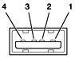

The USB ports use USB Type A connectors, which have four pins each. Two of the pins are used for power and two for data. Figure 3-1 is an illustration of a Type A port; Table 3-1 shows the signals and pin assignments.
Figure 3-1 USB Type A port and pins
| Pin | Signal name | Description |
| 1 | VCC | +5 VDC |
| 2 | D– | Data – |
| 3 | D+ | Data + |
| 4 | GND | Ground |
The eMac provides 5-volt power to the USB ports. The maximum current available is 500 mA on each port.
The USB ports support both low-speed and high-speed data transfers, at up to 1.5 Mbits per second and 12 Mbits per second, respectively. High-speed operation requires the use of shielded cables.
The Macintosh system software supports all four data transfer types defined in the USB specification.